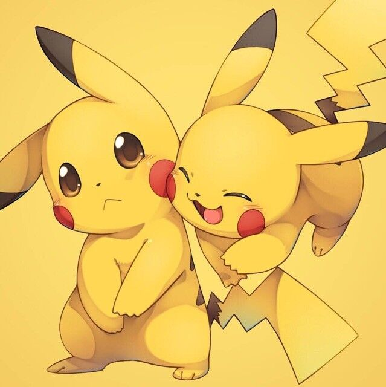

<a href="https://noyii.github.io/">
<div class="card">
    <div class="card__content">
        <div class="item">
            <div class="item__image">
              
            </div>
            <div class="item__content">
              <div class="item__header">
                <h4 style="margin: 0;">Jinbin Bai</h4>
                <font style="color: black;" >个人主页</font>
              </div>
            </div>
          </div>
      <!-- <font color="#000000">个人主页</font> -->
    </div>
  </div>
</a>